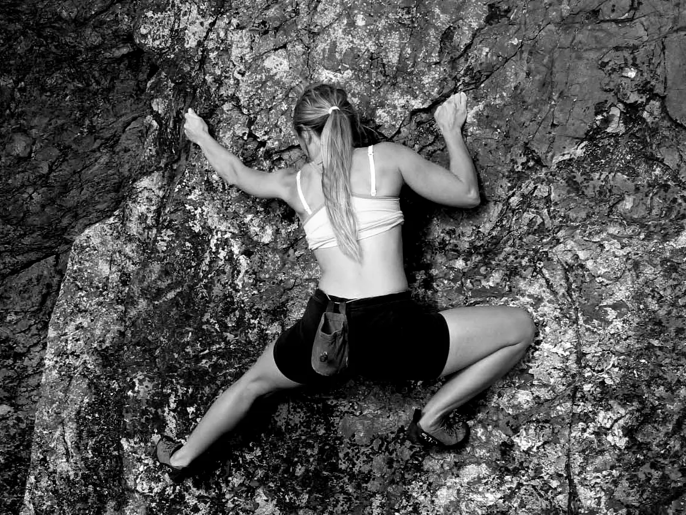

“Climbing is a movement and breathing system. Every move on the rock is supported by a living scaffold.”— Annie Anderson, Pranaclimb: Love, Breathe, Climb
That living scaffold is the trunk: the spine, rib cage, pelvis, diaphragm, abdominal wall, pelvic floor and the local and global muscles that organise pressure, position and force. “Core strength” is only one part of the picture. Climbers need a responsive three-dimensional system that can stabilise without becoming rigid and keep breathing while the limbs move.
The Integration You Never Knew Was Happening
Most climbers think of breathing as something that happens automatically in the background — the body's way of keeping oxygen topped up while the real business of climbing takes place. The physiology is more interesting: breathing and movement are coordinated through interacting neural, mechanical and metabolic processes, so each can influence the timing and organisation of the other.
This phenomenon is called respiratory-motor coupling. Neural interactions between the brainstem respiratory centres, the motor cortex, and the spinal locomotor networks coordinate breathing rhythm with movement execution. Breathing frequency is influenced not just by gas exchange requirements, but by central motor command and the mechanical demands of force production and postural stability.
The Diaphragm's Double Life
The diaphragm has a dual task: it drives inspiration and contributes to postural control. As it contracts and descends, it can work with the abdominal wall, pelvic floor and spinal muscles to regulate intra-abdominal pressure and trunk stiffness while breathing continues.
Experiments involving rapid arm movements have shown that diaphragm activity and pressure changes can begin before the limb moves. In climbing terms, the respiratory and trunk systems can help prepare the body for a lock-off, reach, dyno or steep sequence rather than merely responding after the movement has begun.
Dynamic Stability: Pressure Without Rigidity
Intra-abdominal pressure is best understood as an adjustable support strategy, not a permanently rigid cylinder. A coordinated trunk provides a stable base from which the arms and legs can express force, while still allowing the climber to adapt position, maintain precision and breathe.
Create Pressure
The diaphragm and trunk muscles coordinate before a demanding move, increasing support around the spine.
Transfer Force
A stable torso gives the limbs a more effective base for pulling, pushing, reaching and resisting swing.
Restore Ventilation
After the move, releasing unnecessary bracing allows breathing depth and rhythm to return.
This is the climbing trade-off: too little trunk support can reduce control, but continuous maximal bracing can restrict ventilation and increase respiratory work. The aim is dynamic stiffness—enough pressure for the task, timed to the movement, then released when it is no longer needed.
A six-week study in healthy young adults found that core exercises combined with diaphragmatic breathing improved selected respiratory and movement measures. It supports training the diaphragm as part of an integrated trunk system, although it does not establish a direct climbing-performance effect.
"The climbing core is not a fixed brace. It is a pressure system that prepares, transfers force and then releases so the climber can breathe again."Pranaclimb Methodology 2.0
Breathing Rate as an Integrated Signal
This helps explain why breathing rate can be such a useful field marker in climbing. BR is not a direct measurement of neural drive or trunk stiffness; it is an observable signal influenced by several interacting demands:
Metabolic Demand
The ventilatory drive — how much oxygen you're consuming and how much CO₂ you're producing. Classic exercise physiology.
Central Motor Command
The neural effort signal — how hard your motor cortex is working to coordinate the movement. Breathing rises with effort even before metabolic demand fully catches up.
Mechanical Load
The core stabilisation requirement — how much trunk stiffness the movement demands. Steep terrain and isometric holds increase this load, and it shows in the breath.
This integrated perspective explains the strong coupling between breathing rate and perceived exertion, and provides the physiological basis for using BR as a field proxy for intensity thresholds like Critical Power and the Respiratory Compensation Point.
What This Means for Expressive Breathing
Respiratory-motor coupling also provides a mechanistic explanation for expressive breathing behaviours — breath holds, grunts, power exhales — that are so common in climbing. These aren't just expressions of effort. They're functional motor strategies that the nervous system uses to manage trunk rigidity and force production.
A brief breath hold or brace before a hard move can contribute to intra-abdominal pressure and trunk stiffness. A power exhale timed to maximum effort may help coordinate pressure release, commitment and force expression. Climbers already use these behaviours intuitively; Pranaclimb makes their timing observable and trainable.
Adam Ondra: Recovery, Priming and Expressive Power
Adam Ondra's breathing is not one fixed pattern. It changes with the task. In a 2017 discussion about speed and breathing, he described breathing strongly when he first reached a jug or rest, then slowing the breath as his heart rate settled. Before leaving the rest, he deliberately used deeper breaths to increase readiness:
“Just before going for it [I] breathe deeply a few more times again to motivate myself and ‘wake’ myself up.”— Adam Ondra, 8a.nu
This creates a clear three-stage sequence: ventilate on arrival → downshift during recovery → breathe deeply to prime the next effort. Ondra originally explained pump largely through oxygen availability and lactate. Current climbing physiology treats forearm pump as more complex, involving local blood-flow restriction, high intramuscular pressure and accumulating metabolites. His practical breathing sequence remains highly relevant.
Restore Ventilation
Breathe strongly on arrival to meet the immediate recovery demand.
Slow the Rhythm
Let breathing settle as heart rate and perceived effort begin to fall.
Prime and Wake Up
Use several deeper breaths to restore readiness before leaving the hold.
During maximal movement, the pattern changes again. Pranaclimb's video analyses of Chicken Nose 9a+ and Silence 9c identify brief breath holds, grunts, a passat and power screams during sustained crux climbing. These observable events help brace the trunk, express force and maintain commitment, while also causing Raw BR to under-represent the respiratory demand.
Readiness Potential: Preparing to Move
The Readiness Potential (RP), or Bereitschaftspotential, is a slow change in electrical brain activity observed before self-initiated movement. It is detected with EEG and generally becomes visible after many repeated movements are aligned and averaged. It offers a valuable window into motor preparation, but it cannot be identified from a climbing video or from a single breath.
Park et al. (2020) observed that self-initiated button presses occurred more frequently during expiration. However, a 2026 reanalysis of the original data, a new independent dataset and simulated data found no evidence that respiratory phase directly modulates RP amplitude during natural breathing. The apparent effect arose because both respiratory phase and RP amplitude were related to movement onset.
RP Sync: The Pranaclimb Coaching Principle
RP Sync is the Pranaclimb term for coordinating a breath phase—often an exhale or brief brace—with commitment and force during a difficult move. It turns emerging breath–action research into a practical sequence climbers can rehearse: prepare → organise pressure → commit → release → restore breathing.
RP — Readiness Potential
- → Neural preparation before voluntary movement
- → Measured with EEG across repeated trials
- → Cannot be inferred directly from video
- → Scientific inspiration for the field concept
RP Sync — Breath and Execution
- → Breath phase coordinated with movement
- → Observed during real climbing
- → Supports rhythm, commitment and force expression
- → Can be rehearsed, filmed and coached
“RP Sync is the moment breath, commitment and movement arrive together.”— Pranaclimb
Will Bosi: Burden of Dreams V17
At 16:33–16:35 in footage of Burden of Dreams, Will Bosi shows a compact breath–movement sequence: an observable preparatory exhale, an inhale and postural set, followed by an audible exhale that coincides with commitment. Video cannot reveal RP itself, but it can reveal the field behaviour RP Sync trains.
Jimmy Webb: Sleepwalker V16
Jimmy Webb's 44-second first ascent of Sleepwalker provides a richer high-intensity sequence: apparent breath pauses, a strong preparatory inhale, forceful exhales, vocalisation and a clear respiratory release after success. Pranaclimb uses these observable events to ask how breathing contributes to bracing, timing and recovery—and why Raw BR can underestimate the demand of bouldering.
What the Three Climbers Show
Adam Ondra — Regulate
Ventilate on arrival at a rest, slow the rhythm as recovery develops, then use deeper breaths to prime the next effort.
Will Bosi — Coordinate
A compact preparatory breath sequence culminates in an exhale timed to commitment.
Jimmy Webb — Express
Breath pauses, forceful exhales and vocalisation reveal the hidden respiratory cost of maximal bouldering.
Pranaclimb — Observe
Raw BR, Effective BR, RPE and video timing turn audible behaviours into transparent coaching questions.
How to Train RP Sync
Start on easy, familiar terrain where attention can stay on timing rather than consequence:
Easy Movement
Notice whether you inhale, hold or exhale as you initiate each move.
Crux Simulation
Prepare the breath, brace only as required and release with commitment.
Video and Audio
Check whether breath is released with the move, too early, too late or not at all.
“Breath timing does not replace strength. It helps organise strength, commitment and movement into one deliberate action.”— Pranaclimb
The Training Implication
Breathwork and movement training are not identical, but they interact. Practising deliberate breath–movement patterns on easy terrain can develop a more repeatable coordination strategy that climbers then test under progressively greater load.
The aim is not to prescribe one breath for every move. It is to give the climber options: breathe continuously when possible, create brief pressure when the task requires it, release with movement and restore ventilation quickly afterwards.
Research
Park et al. (2020) reported that self-initiated button presses occurred more often during expiration and proposed coupling between respiratory phase and RP amplitude. Jeay-Bizot et al. (2026) reanalysed the original dataset, tested a new independent dataset and used simulated data. After controlling for the shared relationship with movement onset, the apparent RP–respiration coupling disappeared. Their Bayesian analyses supported the absence of a direct respiratory-phase effect on RP amplitude during natural breathing.
This does not make breath timing irrelevant to climbing. It means the practical RP Sync hypothesis must stand on observable coordination, biomechanics and coaching outcomes—not on a claim that exhalation strengthens the Readiness Potential.
Key sources: Park et al., Nature Communications (2020), doi:10.1038/s41467-019-13967-9; Jeay-Bizot et al., PLOS Biology (2026), doi:10.1371/journal.pbio.3003982; Schurger et al., Trends in Cognitive Sciences (2021), “What Is the Readiness Potential?”; Hodges & Gandevia (2000); Hodges et al. (1997); Kim et al. (2015).